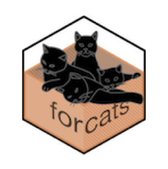
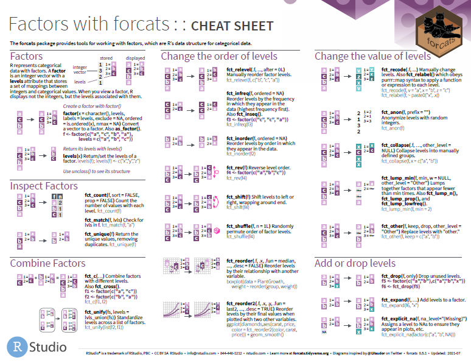

Main and most useful functions
The A Function
- Example
The B Function
- Example
The C Function
*Example
Etc.
*Example
forcats 🤓By now, we already know that data cleaning is important. We have realized that treating certain variables is not always so straightforward and we struggle because we know that this can impact our analysis. This is always the case when we find Categorical Data.
In this workshop we are going to show you how to treat Categorical Data using the forcats tool. It will help you to work with factors.
What do we need?
forcats in R.
Note:
You can also use the forcats tool if you have already installed the tidyverse package.
Or the development version from GutHub: devtools::install_github("tidyverse/forcats").
What will we cover in this workshop?
Categorical Data
What are factors?
Application: why are factors useful?
Incorporating factors into the concept of tidy data: Hello forcats!
Main and most useful functions from forcats
The A Function
The B Function
The C Function
Etc
Factors with forcats: Cheat sheet
Bibliography
What is a Categorical Variable?
“Careless data cleaning operations can lead to errors or inconsistencies in analysis” (McNamara et all, 2007)
Categorical variables have a fixed and known set of possible values.
They represent types of data that may be divided into groups.
Examples of categorical variables: race, age, group, educational level, income brackets.
What is the problem with categorical variables?
Wrangling categorical data can be difficult because many variables are often coded with numerical values.
Categorical variables are often stored with different values in a dataset. For instance, we need to differentiate category numbers and category labels. We need consistency to work with them properly. - How annoying! 😐
We need to know their true value not to miss important information.
A factor is an integer vector with levels attribute that stores a set of mappings between integers and categorical values.
Factors are R’s data structure for categorical data. In simpler words, R represents categorical data with factors.
R displays not the integers from a variable, but the levels associated with them.
Factors in the R language allow to treat character variables in a different way.
Factors could be easier to work with than characters.
Factors are helpful for reordering character vectors in non alphabetical order and to improve display.
They allow to inspect levels in a more detailed way.
Working with factors is a nicer alternative that working only with dummies.
forcats! 🐱Nice Anagram, Hadley!

Hello forcats!
The forcats package provides useful tools to solve probelms with factors.
It is better to work with categorical data using tidyverse than with base R. We will see why!
*Example
*Example
forcats:: Cheat Sheet